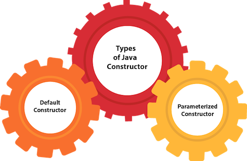

Java constructor

In Java, a constructor is a block of codes similar to the method. It is called when an instance of the class is created.
Rules for creating Java constructor
There are two rules defined for the constructor.
1. Constructor name must be the same as its class name
2. A Constructor must have no explicit return type
3. A Java constructor cannot be abstract, static, final, and synchronized.
Types of Java constructors
There are two types of constructors in Java:
1.Default constructor (no-arg constructor)
2.Parameterized constructor
1.Java Default Constructor
A constructor is called "Default Constructor" when it doesn't have any parameter.
Syntax of default constructor:
classname(){}
2.Java Parameterized Constructor
A constructor which has a specific number of parameters is called a parameterized constructor.
Constructor Overloading in Java:
In Java, a constructor is just like a method but without return type. It can also be overloaded like Java methods.
Constructor overloading in Java is a technique of having more than one constructor with different parameter lists. They are arranged in a way that each constructor performs a different task. They are differentiated by the compiler by the number of parameters in the list and their types.
Java Copy Constructor
There is no copy constructor in Java. However, we can copy the values from one object to another like copy constructor in C++.
There are many ways to copy the values of one object into another in Java. They are:
1. By constructor
2. By assigning the values of one object into another By clone() method of Object class.
View/Download notes
Click here to view file